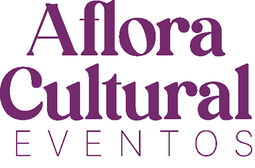

<section class="section-sobre py-5">
  <div class="container">
    <h1 class="text-center">Sobre nós</h1>

    <div class="row align-items-center justify-content-center g-4">
      <div class="col-12 col-md-7">
        <p class="sobre-text">
          Os museus-casas são patrimônios históricos sob responsabilidade da Secretaria de Cultura, Economia e Indústrias Criativas do Estado de São Paulo, e são geridos pela Poiesis, organização social que atua na gestão cultural desses espaços. <br /><br />
          A Aflora Eventos é responsável pela gestão comercial, atuando no fomento à captação de recursos e no zelo pela manutenção dos espaços, sempre em conformidade com as diretrizes de preservação do patrimônio histórico.
        </p>
      </div>

      <div class="col-12 col-md-4 text-center">
        
      </div>
    </div>
  </div>
</section>
